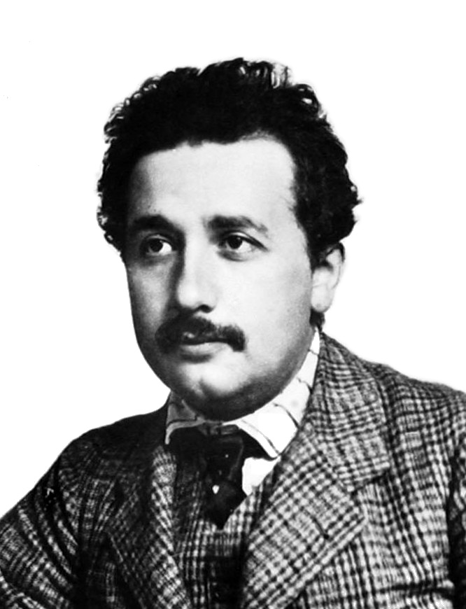

Albert Einstein Tribute Page
Albert Einstein
Albert Einstein (14 March 1879 – 18 April 1955) was a German-born theoretical physicist who developed the theory of relativity, one of the two pillars of modern physics (alongside quantum mechanics). His work is also known for its influence on the philosophy of science. He is best known to the general public for his mass–energy equivalence formula E = mc2, which has been dubbed "the world's most famous equation". He received the 1921 Nobel Prize in Physics "for his services to theoretical physics, and especially for his discovery of the law of the photoelectric effect", a pivotal step in the development of quantum theory.
Life
Early Life
Albert Einstein was born in Ulm, in the Kingdom of Württemberg in the German Empire, on 14 March 1879. Albert attended a Catholic elementary school in Munich, from the age of five, for three years. At the age of eight, he was transferred to the Luitpold Gymnasium (now known as the Albert Einstein Gymnasium), where he received advanced primary and secondary school education until he left the German Empire seven years later.
Einstein always excelled at math and physics from a young age, reaching a mathematical level years ahead of his peers. The 12-year-old Einstein taught himself algebra and Euclidean geometry over a single summer. Einstein also independently discovered his own original proof of the Pythagorean theorem at age 12. His passion for geometry and algebra led the 12-year-old to become convinced that nature could be understood as a "mathematical structure". Einstein started teaching himself calculus at 12, and as a 14-year-old he says he had "mastered integral and differential calculus".

One of the most popular pictures of Albert Einstein.

Albert Einstein in 1904 (Age 25).
In 1895, at the age of 16, Einstein took the entrance examinations for the Swiss Federal Polytechnic School in Zürich (later the Eidgenössische Technische Hochschule, ETH). He failed to reach the required standard in the general part of the examination, but obtained exceptional grades in physics and mathematics. On the advice of the principal of the polytechnic school, he attended the Argovian cantonal school (gymnasium) in Aarau, Switzerland, in 1895 and 1896 to complete his secondary schooling. In September 1896, he passed the Swiss Matura with mostly good grades, including a top grade of 6 in physics and mathematical subjects, on a scale of 1–6. At 17, he enrolled in the four-year mathematics and physics teaching diploma program at the Zürich polytechnic school.
His Work in Patent Office
After graduating in 1900, Einstein spent almost two frustrating years searching for a teaching post. He acquired Swiss citizenship in February 1901, but for medical reasons was not conscripted. With the help of Marcel Grossmann's father, he secured a job in Bern at the Federal Office for Intellectual Property, the patent office, as an assistant examiner – level III. Einstein evaluated patent applications for a variety of devices including a gravel sorter and an electromechanical typewriter. In 1903, his position at the Swiss Patent Office became permanent, although he was passed over for promotion until he "fully mastered machine technology".
First Academic Papers
In 1900, Einstein's paper "Folgerungen aus den Capillaritätserscheinungen" ("Conclusions from the Capillarity Phenomena") was published in the journal Annalen der Physik. On 30 April 1905, Einstein completed his thesis, with Alfred Kleiner, Professor of Experimental Physics, serving as pro-forma advisor. As a result, Einstein was awarded a PhD by the University of Zürich, with his dissertation A New Determination of Molecular Dimensions. Also in 1905, he published four groundbreaking papers, on the photoelectric effect, Brownian motion, special relativity, and the equivalence of mass and energy, which were to bring him to the notice of the academic world, at the age of 26.
Personal Life
Assisting Zionist Causes
Einstein was a figurehead leader in helping establish the Hebrew University of Jerusalem, which opened in 1925 and was among its first Board of Governors. Earlier, in 1921, he was asked by the biochemist and president of the World Zionist Organization, Chaim Weizmann, to help raise funds for the planned university. He also submitted various suggestions as to its initial programs. Among those, he advised first creating an Institute of Agriculture in order to settle the undeveloped land. That should be followed, he suggested, by a Chemical Institute and an Institute of Microbiology, to fight the various ongoing epidemics such as malaria, which he called an "evil" that was undermining a third of the country's development. Establishing an Oriental Studies Institute, to include language courses given in both Hebrew and Arabic, for scientific exploration of the country and its historical monuments, was also important. Chaim Weizmann later became Israel's first president. Upon his death while in office in November 1952 and at the urging of Ezriel Carlebach, Prime Minister David Ben-Gurion offered Einstein the position of President of Israel, a mostly ceremonial post. The offer was presented by Israel's ambassador in Washington, Abba Eban, who explained that the offer "embodies the deepest respect which the Jewish people can repose in any of its sons". Einstein declined, and wrote in his response that he was "deeply moved", and "at once saddened and ashamed" that he could not accept it.
His Love for Music
Einstein developed an appreciation for music at an early age. In his late journals he wrote: "If I were not a physicist, I would probably be a musician. I often think in music. I live my daydreams in music. I see my life in terms of music... I get most joy in life out of music."
His mother played the piano reasonably well and wanted her son to learn the violin, not only to instill in him a love of music but also to help him assimilate into German culture.
When he turned 13, he discovered the violin sonatas of Mozart, whereupon he became enamored of Mozart's compositions and studied music more willingly. Einstein taught himself to play without "ever practicing systematically". He said that "love is a better teacher than a sense of duty."
Music took on a pivotal and permanent role in Einstein's life from that period on. Although the idea of becoming a professional musician himself was not on his mind at any time, among those with whom Einstein played chamber music were a few professionals, and he performed for private audiences and friends. Chamber music had also become a regular part of his social life while living in Bern, Zürich, and Berlin, where he played with Max Planck and his son, among others. He is sometimes erroneously credited as the editor of the 1937 edition of the Köchel catalog of Mozart's work; that edition was prepared by Alfred Einstein, who may have been a distant relation.
In 1931, while engaged in research at the California Institute of Technology, he visited the Zoellner family conservatory in Los Angeles, where he played some of Beethoven and Mozart's works with members of the Zoellner Quartet. Near the end of his life, when the young Juilliard Quartet visited him in Princeton, he played his violin with them, and the quartet was "impressed by Einstein's level of coordination and intonation".

Einstein (right) with writer, musician and Nobel laureate Rabindranath Tagore, 1930.
His Work
1905 – Annus Mirabilis papers
The Annus Mirabilis papers are four articles pertaining to the photoelectric effect (which gave rise to quantum theory), Brownian motion, the special theory of relativity, and E = mc2 that Einstein published in the Annalen der Physik scientific journal in 1905. These four works contributed substantially to the foundation of modern physics and changed views on space, time, and matter. The four papers are:
-
"On a Heuristic Viewpoint Concerning the Production and Transformation of Light" - Photoelectric Effect - Published on 9th June
-
"On the Motion of Small Particles Suspended in a Stationary Liquid, as Required by the Molecular Kinetic Theory of Heat" - Brownian Motion - Published on 18th July
-
"On the Electrodynamics of Moving Bodies" - Special Relativity - Published on 26th September
-
"Does the Inertia of a Body Depend Upon Its Energy Content?" - Energy-Mass Equivalence - Published on st November
Relativity
-
Special Relativity
Einstein's "Zur Elektrodynamik bewegter Körper" ("On the Electrodynamics of Moving Bodies") was received on 30 June 1905 and published 26 September of that same year. It reconciled conflicts between Maxwell's equations (the laws of electricity and magnetism) and the laws of Newtonian mechanics by introducing changes to the laws of mechanics. Observationally, the effects of these changes are most apparent at high speeds (where objects are moving at speeds close to the speed of light). The theory developed in this paper later became known as Einstein's special theory of relativity.
-
General Relativity
General relativity (GR) is a theory of gravitation that was developed by Einstein between 1907 and 1915. According to general relativity, the observed gravitational attraction between masses results from the warping of space and time by those masses. General relativity has developed into an essential tool in modern astrophysics. It provides the foundation for the current understanding of black holes, regions of space where gravitational attraction is so strong that not even light can escape.
Quantum Theory
Unified Field Theory
Following his research on general relativity, Einstein entered into a series of attempts to generalize his geometric theory of gravitation to include electromagnetism as another aspect of a single entity. In 1950, he described his "unified field theory" in a Scientific American article titled "On the Generalized Theory of Gravitation". Although he continued to be lauded for his work, Einstein became increasingly isolated in his research, and his efforts were ultimately unsuccessful. In his pursuit of a unification of the fundamental forces, Einstein ignored some mainstream developments in physics, most notably the strong and weak nuclear forces, which were not well understood until many years after his death. Mainstream physics, in turn, largely ignored Einstein's approaches to unification. Einstein's dream of unifying other laws of physics with gravity motivates modern quests for a theory of everything and in particular string theory, where geometrical fields emerge in a unified quantum-mechanical setting.

The 1927 Solvay Conference in Brussels, a gathering of the world's top physicists. Einstein is in the center.